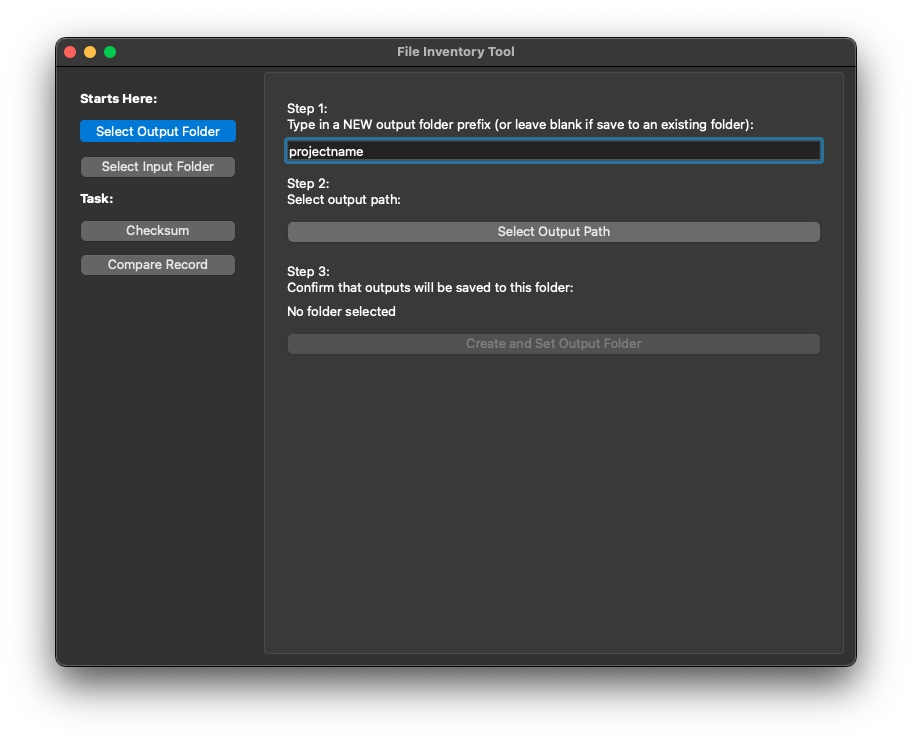
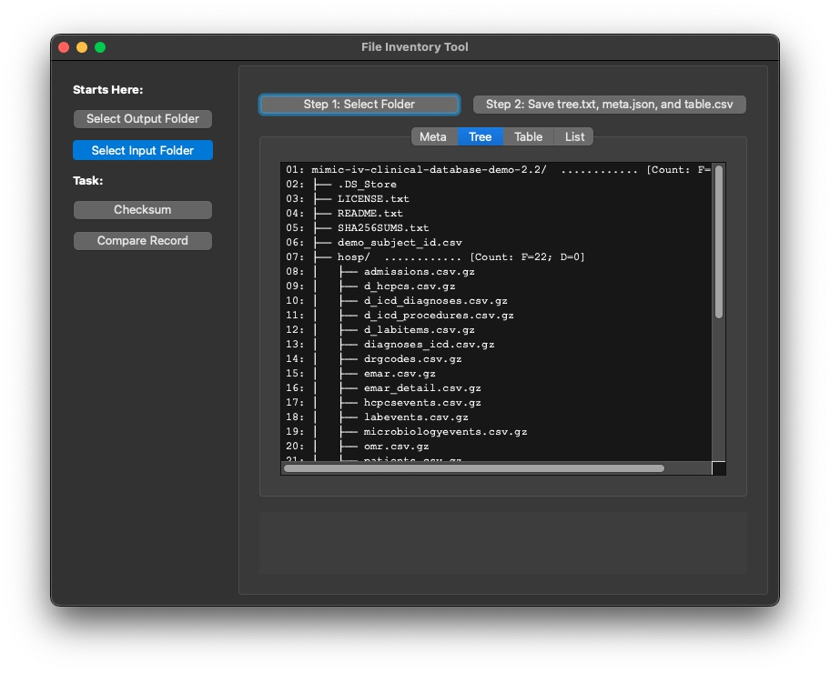

file/Folder Snapshot
A quick tool to generate file list without other installations.
To start the app from Python environment:
import mtbp3cd
mtbp3cd.runapp("FileInventory")
Overall
This app includes a set of buttons on the left hand side for navigating through major steps. Within each function set, additional buttons arranged horizontally for executing functions.
Navigating buttons include:
Select output folder: this page sets output folder path for storing log files from folder snapshot. These log files provides information about the folder structure, time, file size, file type, etc. If the first item is left blank, a existing folder will be selected, and a warning message will be shown if the existing folder is not empty.Select input folder: this page sets input folder, which could be a data package folder. Thesavebuttons keep information about the input folder in log files and save these files in the output folder. NOTE that these twosavebuttons will OVERWRITE log files without sending warning or ask for confirmation.Checksum: this page can generate a checksum file for all files within the input folder, or select a checksum file and compare that with checksums of files in the input folder. Three options are provided.Comparing records: this page compare folder logs including size, dates, path, files, folder structure, etc. This page can function with or without an input folder selected:if an input folder is not selected, the function will try to find log files in the output folder, and compare logs in the output folder and logs in the record folder selected in this page.
if an input folder is selected, the function will try to create log information, and compare logs of the input folder and logs in the record folder selected in this page
To start, select an output folder:

To select the folder that includes data files:
